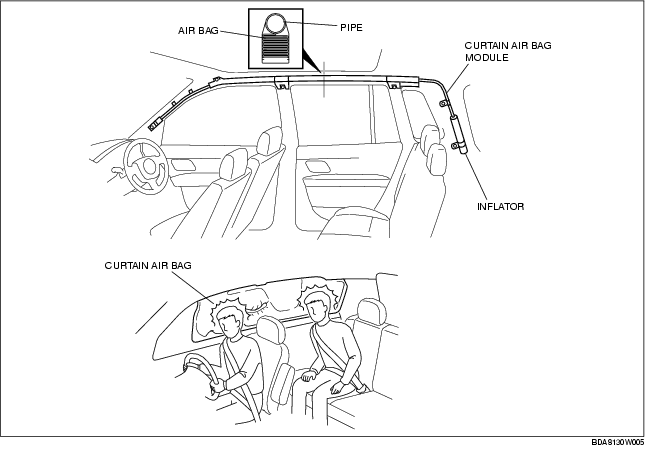
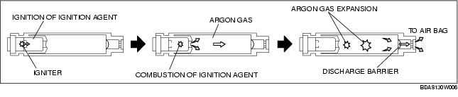

CURTAIN AIR BAG MODULE CONSTRUCTION/OPERATION
id081000100700
• The curtain air bag modules are equipped along the roof edge between the A and C pillars.
• Consists of an inflator, bag cover, and air bag.
• When the curtain air bag operates (deploys), the A-pillar trim and headliner is spread apart by gas generated from the inflator, inflating the air bag.

• The inflator operates (deploys) in the following order:
-
1. When an operation (deployment) signal is received from the SAS control module, the igniter generates heat and ignites the ignition agent.
-
2. The ignition of the ignition agent causes the combustion of a gas generating agent which forms nitrogen gas.
-
3. The nitrogen gas is cooled at the filter and the filtrate is injected into the air bag.
